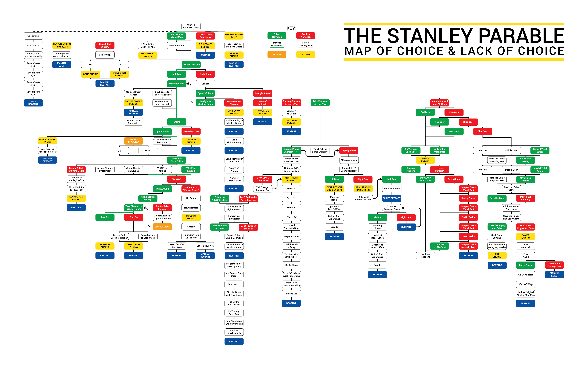

The Stanley Parable is a 2013 first‑person “walking simulator” developed by Galactic Café. Walking simulators are narrative‑driven games that focus on exploration and story rather than combat or complex mechanics. Players move through environments, uncovering plot details at their own pace.
You play as Stanley, Employee 427, who realises one day that all his co‑workers have vanished. A disembodied Narrator describes everything Stanley is “supposed” to do—but you can obey, disobey, or wander off entirely. Every decision branches the story into different endings that comment on free will, conformity, and the nature of storytelling itself.
Despite dozens of possible endings, the game reveals that every path was pre‑written. Your apparent freedom is part of the design, challenging the player to question whether choice in games (and life) is real or illusory.
A fan‑made map visualising most decision paths in the game.
The Stanley Parable is best understood through a postmodern metafictional lens that foregrounds self‑reference, intertextuality, and the collapse of authorial authority. A complementary ludology‑first view (studying games as rule‑systems) shows how its design itself produces meaning. Together, these lenses expose the game’s central irony: whichever hallway we choose, the algorithm already knows every outcome. The tension between felt agency and coded inevitability is the sharp edge of its post‑modern critique.
These parallels place TSP in a wider cultural conversation about authorship, control, and simulated realities.
Beyond a satire of game design, The Stanley Parable doubles as a labour parable for the algorithmic age: Stanley’s keypad resembles today’s data‑entry micro‑tasks, and the Narrator anticipates AI management systems that nudge workers with “optimal” prompts. The game thus foreshadows a future where both labour and leisure are invisibly scripted by code, making its post‑modern warning newly urgent.
Answer the following questions to see how well you grasp the post‑modern tricks inside The Stanley Parable.
These screenshots illustrate key moments. Replace alt text to describe each image.